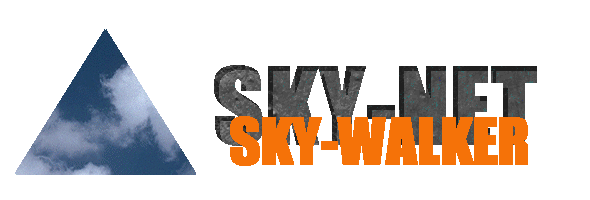
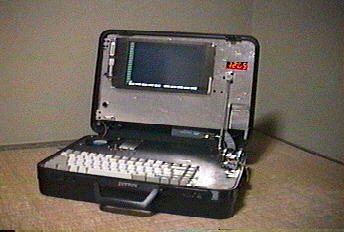
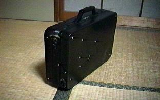
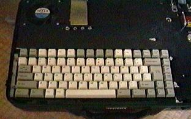
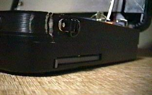
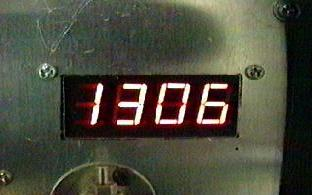

- 目的
携帯型パケット通信端末「SKY-WALKER」はアマチュア無線を利用したパソコン通信
（パケット通信）を「いつでも」「どこでも」行うことを可能にし、その発展を
目指すものである。使用目的としてはRBBS「SKY-NET」の外部からのメンテナンス、
旅先でのパケット通信がある。
- 構成
ベースはNEC PC-9801NX/Cで、これをENGINEERのハードケースにTNC、ハンディ無線機と
共に組み込んだものである。以下に詳細を記す。


PC部
- 本体：NEC PC-9801NX/C
- CPU：Intel 80486SX-20MHz
- LCD：TFT 16色 640x400dot表示
- RAM：標準1.6 ＋増設8MB
- HDD：520MB
- FDD：1.25MB 3.5inch x1

キーボードはＡＴ互換機用の英語キーを使用。
（注：Ｍが２つなのは私のせいではありません。）

無線部
- RIG：YAESU FT-41 430MHz帯 3.5W(Max)
- TNC：TASCO TNC-55 2値AFSK 1200bps
電源部
- BATT：6Ah 鉛蓄電池
- 安定化電源搭載

その他
- NIC：アライドテレシス ME-1500 (10BASE-2)
- HUB：Acton EtherHub-8s (10BASE-Tx8, 10BASE-2x1)
- デジタル電圧計搭載
デジタル電圧計表示部
- 最後に
総重量は無線機、TNC及びHUBを組み込む前で約9.6kg、その大半は鉛蓄電池によるもの
ですが、スイッチング電源ではなく安定化電源を内蔵しているためそのトランスも
原因です。また640x400で１６色表示なので９５も入りません。486SX-20MHzなので
Ｘも重すぎます。でもパケットには十分だもん。
ｂｙ すすたわり